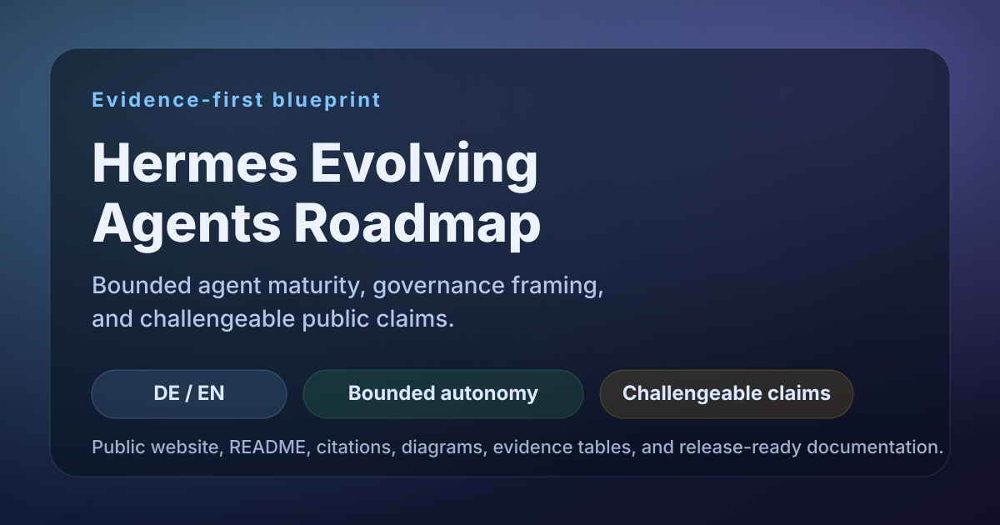
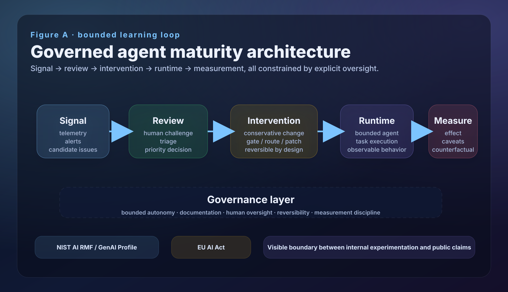
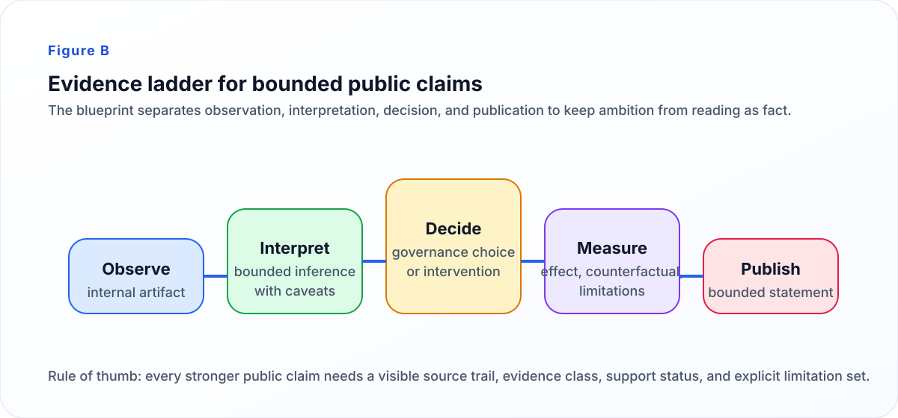

Hermes Evolving Agents Roadmap
A public-facing blueprint for describing agent maturity under bounded autonomy, explicit governance, and challengeable evidence. The point is not to claim broad self-improvement, but to show how an agent system can be evaluated, governed, and communicated with scientific restraint [1][2][3][4].
One disciplined public object, three visible boundaries
- System boundary: what exactly is being described as the public object.
- Evidence boundary: what is observed, inferred, supported, or still open.
- Claim boundary: what can be stated now without overstating autonomy.

From hype-heavy autonomy claims to bounded, testable maturity statements
1. Problem framing
Agent narratives often move from compelling demos to broad autonomy language too quickly. Trust breaks when evidence, governance, and uncertainty are underspecified [1][4].
2. Operating model
This blueprint treats the system as a governed loop: signal → review → intervention → runtime → measurement. Human oversight is explicit rather than assumed away [2][3][5].
3. Evidence boundary
The strongest current public claim is deliberately narrow: partial proof of controlled feedback and instrumentation discipline, not stable autonomous self-improvement [6][7][8].
Visual story

Figure A. Public-facing architecture of the bounded learning loop: signal, review, intervention, runtime, and measurement within a governance frame.
Why this figure matters
- Separates operational stages that are often collapsed in agent marketing.
- Shows oversight as a first-class layer, not an afterthought.
- Supports a narrower and more defensible claim language.
Scientific communication rule
A good public figure reduces interpretive ambiguity. It should make it harder to confuse internal experimentation with validated system capability [1][4].

Figure B. Evidence ladder for keeping observation, interpretation, decision, measurement, and publication distinct.
Claims, evidence, and support status
| Claim area | Current public stance | Support status | Main support |
|---|---|---|---|
| Bounded autonomy | Supported as a governance posture, not as proof of full autonomy | Supported | NIST AI RMF, NIST GenAI Profile, EU AI Act [1][2][3] |
| Agent evaluation | Should be multi-dimensional and benchmark-aware | Supported | HELM, AgentBench, GAIA, SWE-bench [4][6][7][8] |
| Current maturity | Approximately Phase 1.5 with partial movement toward adoption-candidate behavior | Partially supported | Internal observations plus bounded interpretation; not yet externally benchmarked one-to-one |
| Closed-loop self-improvement | Not yet defensible as stable fact | Not supported | Bounded proof only; no repeated longitudinal evidence yet |
Quality rule
Public claims should map to a source trail, evidence class, support status, and caveat set. Anything weaker should remain framed as interpretation or aspiration.
Component matrix
| Component | Function | Main inputs | Main outputs | Main failure mode |
|---|---|---|---|---|
| Signal layer | Detect candidate improvement or risk signals | Telemetry, logs, human observations | Candidate issue or change request | Noise mistaken for signal |
| Review layer | Challenge and prioritize candidate changes | Signals, historical context, human judgment | Explicit decision or rejection | Weak triage or unchallenged assumptions |
| Intervention layer | Apply a bounded change | Approved rule, patch, routing change, workflow update | Modified system condition | Change without reversibility or traceability |
| Runtime layer | Execute bounded agent behavior | Current configuration and user tasks | Observable behavior | Local success mistaken for general capability |
| Measurement layer | Estimate effect and caveats | Before/after traces, same-snapshot comparisons, reviewer notes | Bounded effect statement | Overclaiming from sparse or non-longitudinal evidence |
Limitations and non-goals
| Area | Current posture |
|---|---|
| Longitudinal proof | Not yet established |
| Broad autonomous self-improvement | Not claimed |
| Public raw evidence completeness | Partial; strongest artifacts remain private |
| One-number maturity score | Intentionally avoided |
| Full external benchmark equivalence | Not yet demonstrated |
Non-goal
This site does not attempt to prove broad autonomous self-improvement. Its job is to communicate a bounded, challengeable operating model with visible evidence limits.
Common questions
What is the main claim?
A narrow one: the system is presented as a bounded, evidence-first maturity blueprint, not as proof of stable autonomous self-improvement.
Why does this site look scientific?
Because the goal is challengeable public communication: explicit limits, citations, diagrams, and support-status tables instead of pure narrative rhetoric.
Where should a skeptical reader start?
Begin with system scope, methodology, evidence posture, and the bounded proof-case verdict. Those pages define the public object and its current limits.
How can someone contribute?
Contributions should improve clarity, evidence quality, visual communication, or governance framing without broadening the public claim beyond the available support.
Current reference base
The sources below support governance, methodology, and evaluation language on this page. For the fuller lists, see en/references.md and de/referenzen.md.
- [1] NIST AI RMF 1.0, 2023. doi.org/10.6028/NIST.AI.100-1
- [2] NIST Generative AI Profile, 2024. doi.org/10.6028/NIST.AI.600-1
- [3] EU AI Act, Regulation (EU) 2024/1689. eur-lex.europa.eu/eli/reg/2024/1689/oj
- [4] Liang et al., Holistic Evaluation of Language Models, TMLR 2023. openreview.net/forum?id=iO4LZibEqW
- [5] Yao et al., ReAct, ICLR 2023. openreview.net/forum?id=WE_vluYUL-X
- [6] Liu et al., AgentBench, 2023. arxiv.org/abs/2308.03688
- [7] Mialon et al., GAIA, 2023. arxiv.org/abs/2311.12983
- [8] Jimenez et al., SWE-bench, ICLR 2024. openreview.net/forum?id=VTF8yNQM66